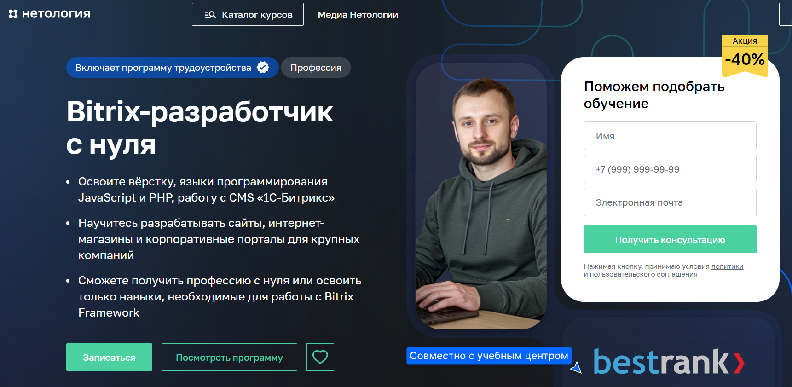

Курс «Bitrix-разработчик с нуля» — Нетология

Сайт: https://netology.ru/programs/bitrix
Цена: 110 000 руб без скидки
Продолжительность: 10 месяцев
Получаемый документ: Диплом о профессиональной переподготовке
Поддержка в трудоустройстве: Мы окажем помощь в поиске работы
Что вы получите
- Участие в бесплатной программе по трудоустройству от Центра карьерного роста
- Помощь в составлении резюме
- Навыки уверенной презентации своих сильных сторон
- Методы поиска вакансий
- Знакомство с платформами для поиска работы и доступ к бирже проектов
- Подготовка к собеседованиям
- Умение говорить о себе без напряжения и правильно отвечать на вопросы
- Создание портфолио
- Оформление портфолио для уверенности работодателя в ваших способностях
- Навыки работы на себя
- Поиск первых клиентов и построение коммуникации с ними
Кому подойдёт курс
Вы можете быть новичком в профессии — предыдущее образование или опыт не имеет значения. Вы сможете овладеть специальностью с нуля, обучаясь под руководством наставников.
Чему вы научитесь
В ходе обучения создадите:
• Кроссбраузерную верстку макета блога с использованием HTML и CSS
• Игра «Крестики-нолики» на языке JavaScript
• Информационный ресурс на платформе 1С-Битрикс
• Интернет-магазин спортивного снаряжения на платформе 1С-Битрикс
Содержание курса
Программа курса
Занятия проводятся дважды в неделю с 19:00 до 21:00. Вы выполните более 100 практических заданий, создадите три курсовых работы и защитите дипломный проект.
Часть 1. Основы разработки сайтов с использованием JavaScript и PHP
Вёрстка сайта на HTML и CSS
Вы изучите, как создавать страницы на HTML и CSS и изменять существующие макеты. По окончании этого модуля вы сможете самостоятельно сверстать лендинг.
12 часов теории
24 часа практики
Теги для вёрстки контента страниц
Теги для вёрстки структуры страниц
Теги для вёрстки форм
Селекторы CSS
Определение контекста элементов
Блочная модель
Позиционирование элементов
Стилизация текста
Оформление декоративных компонентов
Состояние интерактивных элементов
Кроссбраузерная верстка макета блога на HTML и CSS
Курсовая работа
В этом проекте вы создадите макет личного блога с реализацией кроссбраузерной верстки, используя HTML и CSS.
24 часа практики
Основы программирования на JavaScript
Вы познакомитесь с основами программирования, напишете первые строки кода и создадите простые приложения.
Вы будете использовать JavaScript для практики, что поможет вам глубже понять функции фронтенда.
Изучите различные языки программирования и научитесь выбирать подходящий, основываясь на своих личных и профессиональных целях.
В финальном проекте вы разработаете онлайн-игру, похожую на «Монополию».
12 часов теории
24 часа практики
Алгоритмы
Переменные, числа и строки
Логика и математические операции
Условия в коде
Алгоритм с множественным выбором
Ошибки в коде
Массивы
Циклы
Функции и подпрограммы
Объекты
Синхронное и асинхронное исполнение алгоритмов
Игра «Крестики-нолики» на JavaScript
Курсовая работа
В этом элементе курса вы разработаете игру «Крестики-нолики». Фронтенд-разработчик уже создал визуальное оформление, и вам нужно будет запрограммировать логику игры. Игроки поочередно ставят крестики и нолики.
24 часа практики
Система контроля версий Git
Вы освоите работу с Git и GitHub, что позволит вам публиковать свои домашние задания и формировать первое портфолио во время обучения — работодатели часто требуют примеры кода с GitHub.
4 часа теории
9 часов теории
Назначение системы контроля версий
Основные операции: фиксация и откат изменений, поиск, история
Работа с GitHub
Ветки, слияние веток и разрешение конфликтов
Командное взаимодействие
Основы PHP
Вы начнёте изучение PHP. В этом разделе вы ознакoмитесь с основными конструкциями языка и научитесь работать с функциями и объектами.
13 часов теории
32 часа практики
Введение в PHP и PhpStorm
Консольные приложения на PHP
Основные операторы и функции
Создание функций на PHP
Основы работы с объектами
HTTP, заголовки, сессии
Работа с файлами и HTML-формами
Развёртывание приложений на хостинге
Работа веб-приложений
Вы изучите взаимодействие фронтенд- и бэкенд-частей. Узнайте о популярных методах и форматах передачи данных в работе с веб и API промышленных HTTP-серверов.
7 часов теории
21 час практики
HTTP и современные технологии веб. Формы и форматы передачи данных
Библиотека JQuery
Библиотека Bitrix JS
REST API в Bitrix Framework
Форматы обмена данными: JSON, XML
Работа с базами данных MySQL
Введение в профессию Bitrix-разработчика
Результат обучения
Итоговая работа — интернет-магазин спортивного инвентаря
Вы создадите интернет-магазин на платформе 1С-Битрикс.
Ваша задача — разработать клиентскую и административную части проекта.
На завершение финальной работы у вас будет месяц.
Административная часть:
• Управление товарами
• Заказами
• Новости
• Страницы с текстами
• Платежные системы
• Доставка
Клиентская часть:
• Страницы с текстами
• Меню
• Каталог товаров
• Раздел новостей
• Корзина
• Оформление заказов
Ключевые навыки
- Вёрстка страниц с использованием HTML и CSS
- Работа с фронтендом на JavaScript
- Работа с бэкендом на PHP
- Управление изменениями кода через Git и GitHub
- Создание сайтов с помощью фреймворка Bitrix
- Управление сайтами на платформе 1C-Bitrix
- Взаимодействие с API сторонних сервисов
- Работа с новым ядром платформы Bitrix D7
Профессия 1С-разработчик в Skillbox

Сайт: https://skillbox.ru/course/profession-1c/
Цена: 3956 руб/мес с рассрочкой на 22 месяца
Продолжительность: 6 месяцев
Документ о завершении курса: свидетельство от компании «1С»
Поддержка в трудоустройстве: да
Станьте специалистом по разработке на платформе «1С:Предприятие» под руководством опытного наставника и начните зарабатывать, даже если у вас нет опыта программирования. После завершения курса мы поможем вам трудоустроиться.
Кому будет полезен данный курс
Новичкам
Вы получите практические навыки программирования и работы с конфигурациями системы «1С:Предприятие 8», подготовитесь к экзамену «1С:Профессионал» и сможете устроиться на работу в качестве программиста 1С.
Пользователям системы 1С
Вы сможете дорабатывать существующие конфигурации под требования заказчика. Научитесь составлять технические задания, создавать отчёты, обрабатывать данные и модифицировать функционал.
Опытным программистам
Вы познакомитесь с основами оперативного учета, научитесь использовать учетные регистры и регистры расчёта. Сможете дорабатывать типовые конфигурации 1С.
Получите свидетельство от фирмы «1С»
Курс сертифицирован создателями «1С:Предприятия».
По окончании обучения вам будут выданы два документа — сертификат Skillbox и свидетельство от компании 1С. Эти документы подтвердят уровень ваших навыков и помогут привлечь внимание работодателей.
Чему вы научитесь
Автоматизация бизнес-процессов
Разработка систем учета
Создание и доработка функционала
Настройка отчетов для руководства
Проектирование архитектуры баз данных
Интеграция 1С с другими системами
Разработка собственной конфигурации
Гарантия трудоустройства или возврат денег
Вы получите индивидуальную поддержку от HR-менеджера. Вместе вы подготовите резюме, создадите портфолио и разработаете карьерный план, что поможет вам быстрее найти работу. Вы сможете выбирать выгодные вакансии и получите преимущество при прохождении собеседований.
Если вы не трудоустроитесь, мы вернём вам деньги за курс*.
Содержание курса
Вас ждут три раздела, которые дадут вам конкурентное преимущество на рынке труда и подготовят к сертификации.
29 тематических модулей
57 видеоматериалов
Курс «1С-разработчик с нуля до PRO»
Мини-курс «Язык запросов SQL»
Класс «Универсальные знания программиста»
Спикеры
Александр Архипов
Специалист по внедрению, работающий в одной из самых крупных компаний-партнёров фирмы «1С»
Денис Слепцов
Руководитель отдела программного обеспечения
Александр Маковеев
Специалист по внедрению
Курс «Создание сайта на битрикс» — Академия IT

Сайт: https://academiait.ru/course/sozdanie-sajta-na-bitriks/
Цена: Бесплатно
Продолжительность: 14 уроков
Получаемый документ: отсутствует
Поддержка в трудоустройстве: отсутствует
Курс подойдет всем, кто хочет ознакомиться с профессией.
Чему вы научитесь
Бесплатный и доступный онлайн-курс «Создание сайта на битрикс».
Завершив этот курс, вы сделаете первый шаг к серьезному обучению и сможете лучше понять свои интересы и цели!
Вы также сможете бесплатно изучить множество других увлекательных онлайн-курсов. Регистрируйтесь и получайте знания совершенно бесплатно.
Существует возможность найти и скачать нужные книги, методические пособия, инструкции, презентации и другие учебные материалы абсолютно бесплатно!
Программа обучения
Урок 1: Введение. Создание сайта с помощью Битрикс
Урок 2: Верстка макета с использованиeм HTML/CSS. Разработка сайта на Битрикс
Урок 4: Формирование шаблона для Битрикс на основе HTML/CSS-верстки
Урок 3: Установка системы Битрикс на локальный ПК (виртуальная машина Битрикс)
Урок 5: Настройка меню в системе Битрикс
Урок 6: Организация инфоблоков в Битрикс, вывод инфоблоков на сайт, верстка инфоблоков
Урок 7: Создание включаемых областей в Битрикс
Урок 8: Создание слайдера в Битрикс, используя инфоблок и компонент «Список новостей»
Урок 9: Улучшаем оформление сайта на платформе Битрикс
Урок 10: Формирование товарного каталога на Битрикс
Урок 11: Перенос сайта с Битрикс на хостинг, настройка форм поиска и регистрации пользователей
Урок 12: Верстка компонента «Каталог» на Битрикс
Урок 13: Анонсы каталога и основы поисковой оптимизации в Битрикс
Урок 14: Заключение и небольшое обсуждение с Яндексом
Курс «1С-Битрикс» — Факт.Школа

Сайт: https://school.fact.digital/
Стоимость: 18’000 рублей
Продолжительность: 3 месяца
Документ о завершении курса: информация отсутствует
Содействие в трудоустройстве: возможное трудоустройство выпускников в одну из ведущих IT-компаний страны – «Факт».
Кому подойдет учебный курс
Студентам IT-направлений
Людям, увлеченным изучением и практикой веб-разработки самостоятельно
Студентам технических специальностей, желающим сменить профессию на программирование
IT-специалистам, стремящимся перейти в сферу веб-разработки
Что вы освоите
Обучение в реальных условиях, а не просто через видеоуроки
Работа в команде над конкретными проектами
Сдача экзамена — гарантированная работа
Рабочее место у одного из ведущих веб-разработчиков в стране
Структура курса
Изучение HTML, CSS
Общие сведения о HTML
Основы CSS
Работа с текстом
Управление ссылками и изображениями
Создание таблиц
Работа с таблицами стилей HTML-форм
Обучение PHP
Основы работы с PHP
Расширение возможностей PHP
Обработка данных от пользователей на PHP
Интеграция PHP с MySQL
Объектно-ориентированное программирование в PHP
Осваиваем 1С-Битрикс
Введение в контент-менеджмент систему (CMS), возможности 1С-Битрикс
Методы установки 1С-Битрикс, установка на виртуальной машине
Структура Bitrix Framework, работа с админпанелью
Верстка сайтов на 1С-Битрикс, распределение областей, изучение типовой структуры сайта
Функции загрузки страницы
Интеграция верстки в шаблоны 1С-Битрикс, принципы разметки общих шаблонов
Сравнение структуры HTML-шаблона с типовой версткой 1С-Битрикс
Компоненты 1С-Битрикс: виды и к ним функции
Работа с меню 1С-Битрикс
Права пользователей и авторизация в 1С-Битрикс
Использование карт в 1С-Битрикс, примеры и предназначение
Создание обратной связи в 1С-Битрикс, работа с информационными блоками
Управление динамическими данными в 1С-Битрикс
Кэширование в 1С-Битрикс, основы работы с кэшированием компонентов
Сложные компоненты 1С-Битрикс
Технологии, используемые в сложных компонентах
Поиск на сайте 1С-Битрикс
Дополнительные типовые возможности для реализации функционала, работа с контентом в 1С-Битрикс
Разбор типовых ошибок на итоговом экзамене 1С-Битрикс
Подготовка к сдаче экзамена по 1С-Битрикс
Результат прохождения курса: гарантированное трудоустройство в компанию «Факт» после сдачи независимого экзамена от 1С-Битрикс
Курс «1С – Битрикс. Быстрый старт разработчика» — Центр компьютерного обучения «Специалист» при МГТУ им.Н.Э.Баумана

Сайт: https://www.specialist.ru/course/1cbitraz
Стоимость:
Частным лицам
Очно: 19 990 руб
Онлайн: 19 950 руб
Обучение в рассрочку:
От 1 067 руб./мес
Индивидуальное обучение:
48 000 руб *
Организациям
Очно: 24 490 руб
Онлайн: 24 490 руб
Продолжительность: 24 академических часа + 12 академических часов бесплатно
Документ о завершении курса: сертификат
Содействие в трудоустройстве: отсутствует
Кому подойдет учебный курс
Идеальная подготовка для студентов:
Успешное завершение курса HTML и CSS. Уровень 1.
Создание веб-сайтов с использованием HTML 5 и CSS 3 или аналогичная подготовка.
Успешное окончание курса PHP часть 1.
Основы PHP8 или аналогичная подготовка.
Рекомендуемая подготовка (необязательная): успешное завершение курса 1С — Битрикс. Управление сайтом – администрирование или аналогичная подготовка.
Что вы освоите
Конфигурирование веб-сайтов на платформе 1С-Битрикс
Работа с инфоблоками и API
Создание собственных модулей
Установка и настройка компонентов
Создание и настройка полноценного интернет-магазина
Структура курса
Модуль 1. Введение в сайт на Битрикс. Установка системы. Структура сайта (4 ак. ч.)
Формирование понимания системы «1С-Битрикс»,
Установка и первичная настройка программного продукта,
Создание нескольких сайтов на одной лицензии,
Структура системы и принципы управления сайтом.
Понимание структуры сайта, организация структуры, способы обмена данными с сервером, управление обработкой адресов.
Модуль 2. Инфоблоки. Использование API «1С-Битрикс» (4 ак. ч.)
Определение инфоблока,
Свойства инфоблока и его разделов,
Импорт и экспорт данных инфоблока.
Введение в API системы «1С-Битрикс»,
Использование базовых функций API,
События и работа с ними,
Настройка форм редактирования элементов.
Модуль 3. Архитектура продукта. Сайт. Шаблоны (4 ак. ч.)
Определение шаблона сайта,
Основные элементы шаблона сайта,
Архитектура продукта,
Структура файлов,
Права доступа.
Модуль 4. Технологии. Автоматизация типовых процессов разработки (4 ак. ч.)
Основы и методы отладки сайтов на «1С-Битрикс»
Понятийный аппарат мастеров, создание и использования мастера
Типовые задачи разработчика веб-сайта и их автоматизация,
Понятие об агентах, обработка событий, кэширование.
Модуль 5. Модули и компоненты (4 ак. ч.)
Детальное изучение структуры файлов,
Взаимодействие модулей и компонентов, принципы их организации,
Кастомизация и модификация стандартных компонентов, создание собственных компонентов.
Модуль 6. Создание интернет-магазина (4 ак. ч.)
Академическая нагрузка в учебном классе с преподавателем: 24 ак. ч. + 12 ак. ч. в подарок*
* Дополнительные часы для самостоятельной работы на компьютерах Центра предоставляются бесплатно. Вы сможете закрепить полученные знания, выполнять домашние задания и проконсультироваться со специалистами Центра. Дополнительные часы можно получить в дни занятий по предварительной записи.
Утренним группам с 8:30 до 10:00
Дневным группам — по 1 ак. ч. до и после занятий (13.15-14.00, 17.10-17.55)
По завершении обучения проводится итоговая аттестация. Она осуществляется в формате тестирования на последнем занятии или на основе оценок практических работ, выполняемых в процессе учебы.
Результаты окончания курсов
Создание сайта на 1С-Битрикс напоминает работу с конструктором, который состоит из множества настраиваемых модулей.
Вы получите практические навыки под руководством преподавателя, установите дистрибутив, ознакомитесь с инструментами для создания сайтов на платформе 1С-Битрикс и научитесь поэтапно настраивать модули для разработки собственного интернет-магазина.
Курс «Битрикс» — irs.academy

Сайт: https://irs.academy/kurs_po_bitriks
Стоимость: 32 000 рублей
Продолжительность: 16 часов. 8 уроков
Документ о завершении курса: Сертификат специалиста по Битрикс
По завершении обучения вы получите сертификат, подтверждающий ваш успех в онлайн-курсе по Битрикс.
Сертификат будет отправлен вам в электронном виде, а в случае необходимости оригинал будет выслан Почтой России.
Кому подойдет курс
Для новичков
Вы никогда не проходили онлайн-курсы по 1С-Битрикс, но хотите работать с этой платформой?
Преподаватель академии HEDU подготовил курс для тех, кто еще не знаком с Битрикс, поэтому информация станет доступной даже для начинающих.
Для владельцев бизнеса
Хотите разобраться в особенностях вашего сайта, чтобы контролировать работу внешних специалистов или выполнять некоторые задачи самостоятельно?
Онлайн-курс по Битрикс станет отличным стартом.
Для контент-менеджеров
Вам необходимо заполнять контентом веб-порталы, но у вас есть вопросы по работе с Битриксом?
Пройдите пошаговое обучение и оптимизируйте свои задачи.
Для администраторов сайтов
В ваши обязанности входит актуализация информации на сайтах, и вы хотите заполнить пробелы в своих знаниях?
Посетите курс по 1С-Битрикс, чтобы разобраться в функционале платформы.
Для желающих заработать дополнительно
Хотите найти подработку, на которую можно будет выделять свободное время?
Пройдите онлайн-обучение по работе с Битрикс с нуля от академии HEDU и приобретите полезные навыки.
Для фрилансеров
Хотите освоить навыки, которые помогут зарабатывать удаленно?
Запишитесь на онлайн-курс по Битрикс с нуля и начинайте выполнять первые заказы.
Что вы изучите
Знания по созданию сайта на платформе 1С-Битрикс
Способности самостоятельно устанавливать и настраивать продукт
Умения редактировать страницы сайта
Видеоуроки по работе с 1С-Битрикс
Сертификат после успешного завершения курса
Возможность обеспечить защиту сайта
Структура курса
Урок 1 — Начало работы с CMS 1С-Битрикс
На первом уроке узнаем, как выполнить установку системы.
Выясним функции административной части и научимся работать с визуальным редактором. Обсудим, зачем нужны команды в панелях управления.
Урок № 2 — Визуальный редактор
На втором уроке мы сосредоточимся на возможностях визуального редактора: узнаем, какие задачи можно решить с его помощью.
Поймем, для чего необходима техническая поддержка.
Урок № 3 — Создание структуры
Третий урок будет посвящен работе со страницами. Мы освоим добавление изображений и видео, а также научимся вставлять гиперссылки. Кроме того, мы будем работать с картой сайта и разрабатывать разнообразные меню.
Урок № 4 — Роль информационных блоков
Четвертая обучающая сессия познакомит нас со статической и динамической информацией. Вы узнаете о различных типах инфоблоков и сможете их создавать и администрировать после занятия.
Урок № 5 — Изучение компонентов
На пятом уроке мы рассмотрим компоненты в системе, выясним их назначение и различия между простыми и сложными. Также коснемся навигационных компонентов.
Урок № 6 — Настройки и инструменты
На шестом занятии мы начнем знакомство с системными параметрами. Вы узнаете, как формировать группы пользователей и настраивать их права. Обсудим вопросы безопасности сайта и оптимизации хранения данных, а также резервного копирования. После этого урока вы сможете самостоятельно оптимизировать базу данных.
Урок № 7 — Дополнительные функции 1С-Битрикс
На седьмом уроке мы обсудим дополнительные сервисы для работы с 1С-Битрикс, узнаем о CDN и возможностях композитного сайта.
Урок № 8 — Создание лендингов
Восьмой урок будет посвящен сотрудничеству с Сайтами24, где вы научитесь создавать лендинги. Также обсудим готовые решения, доступные на маркетплейсе.
Результаты завершения курса
- Каждый сможет создавать сайты с нуля, администрировать их и наполнять разнообразным контентом с целью получения дохода.
- По окончании курса у вас будут навыки:
- Настройки модулей.
- Управления системой через интерфейс.
- Наполнением портала текстами, фото и видео.
- Уверенного владения инструментами системы.
- Управления правами доступа.
- Создания страниц, новых секций и специальных веб-форм.
Курс «Битрикс» — Дело Системы

Сайт: https://delosystems.ru/courses-bitrix/crm/
Стоимость:
физических лиц: 16 000 руб.
студентов: 12 900 руб.
юридических лиц: 18 000 руб.
Длительность: 16 академических часов.
Документ об окончании курса: отсутствует информация
Содействие в трудоустройстве: отсутствует информация
Для кого будет полезен курс
Этот курс особенно подойдет тем, кто занимается предпринимательством, поскольку система Bitrix CRM является важным инструментом для бизнеса. Все больше владельцев бизнесов различных направлений осознают это, что делает курсы по CRM востребованными. Выпускники нашего обучения заметят рост числа клиентов и увеличение продаж.
Группа компаний «Дело Системы» предлагает вам пройти обучение под руководством квалифицированных специалистов, которые быстро и доступно объяснят все ключевые моменты работы с CRM.
Чему вы научитесь
Курс предназначен для тех, кто ранее не имел опыта работы с CMS 1С-Битрикс. Включает в себя управление сайтом и охватывает вопросы наполнения и администрирования, избегая программирования. Данный курс подходит любому, кто умеет работать с компьютером, и поможет освоить 1С-Битрикс.
Структура курса
- Карта CRM — полная история сделки: от первого запроса клиента до оценки работы сотрудников;
- Автоматизация продаж – телефонные звонки и письма помогут осуществлять робот;
- CRM-маркетинг — использование готовых шаблонов, создание собственных и отслеживание эффективности рассылок;
- Звонки из CRM — можете аренда номера или подключение собственной телефонии, все ваши звонки и записи разговоров сохраняются в CRM;
- Письма из CRM — отправка клиенту письма прямо из CRM;
- Бесплатный онлайн-чат на сайте — сообщения из чата попадают в CRM и распределяются между менеджерами;
- План продаж и отчеты — распределяйте планы между сотрудниками, следите за их загрузкой и анализируйте продажи;
- Документы в CRM — печать актов, счетов, доверенностей и других документов по своим или готовым шаблонам;
- CRM для услуг — владельцы и менеджеры салонов красоты, медицинских учреждений могут управлять расписанием работы специалистов и ресурсами;
- Предоставление услуг бронирования;
- Мобильная CRM – связь с вами и управление продажами из любой точки мира стало простым!
- Бесплатное приложение для iPhone и Android.
Итоги обучения
- Внедрение данной системы охватывает практически все подразделения предприятия.
- Это должно уметь делать бухгалтера, менеджеры по работе с клиентами,
- Специалисты по маркетингу, руководители и владельцы бизнеса. Обучение по Bitrix24 CRM будет полезным и IT-специалистам,
- Занимающимся внедрением и сопровождением данного ПО.
- Благодаря четко составленной программе, вы получите понимание всех аспектов работы с системой CRM,
- приобретете навыки её применения. Это в свою очередь улучшит взаимодействие с клиентами и
- повысит уровень продаж товаров и услуг. В процессе обучения используют реальные сценарии из бизнеса,
- поэтому полученные знания будут актуальными. Обращайтесь, группа компаний «Дело Системы» поможет вам освоить одну из
- самых популярных систем для ведения бизнеса.
Курс «1С-Битрикс»

Сайт: https://dwstroy.ru/disc01/
Стоимость: 3 990 руб.
Длительность: 19 уроков, всего 4 часа 08 минут.
Документ об окончании курса: отсутствует информация
Содействие в трудоустройстве: отсутствует информация
Кому будет полезен курс
- Базовые знания — PHP, HTML, CSS, JS
- Наличие сертификата от 1С-Битрикс — «Администратор Базовый»
Что вы освоите
- Модернизация своего сайта
- Работа с документацией 1С-Битрикс
- Понимание файловой структуры компонента
- Работа с многомерными массивами
- Кодирование логики компонента
- Избегание типов ошибок
- Формулирование задач для программистов
- Доработка или создание функционала по аналогии
- Реализация собственных идей в дизайне сайта
Содержание курса
Урок 1.
Введение. Что такое компоненты?
На данном уроке познакомимся с компонентами и их типами. Изучим, как функционирует система 1С-Битрикс и какую роль играют компоненты.
Урок 2.
Размещение и подключение компонента.
Рассмотрим, где размещаются компоненты в 1С-Битрикс, их наименования и пространство имен. Узнаем, как установить компонент на странице, а также рассмотрим код его вызова.
Урок 3.
Файловая структура простого компонента.
Глубже изучим файловую структуру компонентов. Узнаем, каким содержимым располагают такие файлы, как component.php, .parameters.php, .description.php и структуру шаблона.
Урок 4.
Файловая структура комплексного компонента.
Познакомимся с комплексными компонентами, их структурой и основным назначением в системе, а также изучим их отличия от простых.
Урок 5.
Файл .description.php.
В этом уроке подробно разберем код, содержащийся в файле .description.php, основные ключи и языковые файлы, а также способы расширения типового функционала.
Урок 6.
Файл .parameters.php.
Здесь мы рассмотрим назначение файла .parameters.php и его код. Разберем основной массив PARAMETERS и поработаем с его элементами.
Урок 7.
Шаблон компонента.
Теперь начнем работать с шаблонами компонентов. Рассмотрим, какие типы шаблонов существуют, где они находятся, и как копировать шаблон.
Глава 2. РАБОТА С ШАБЛОНОМ КОМПОНЕНТА.
Закрепим изученный материал. В шаблон компонента внедрим готовую верстку и выведем динамическую информацию.
Урок 8.
Переносим верстку в шаблон.
На примере одного из уроков рассмотрим, как внедряется верстка в структуру компонента. Создадим инфоблок и заполним его элементами.
Урок 9.
Вывод информации из инфоблока.
На этом уроке научитесь извлекать данные из массива $arResult и производить необходимые проверки на наличие свойств.
Третья глава. РАЗРАБОТКА КОМПОНЕНТА С НУЛЯ.
В данной главе мы будем применять полученные знания на практике. На примере моего урока о вёрстке создадим новый элемент — компонент «Слайдер». Мы займёмся версткой, сформируем инфоблок с элементами и самостоятельно разработаем логику работы данного компонента.
Урок 10.
Основные принципы разработки
В этом разделе обсудим ключевые принципы программирования на платформе 1С-Битрикс. Опираясь на вёрстку из моего урока по CSS, мы создадим план действий и выделим важные задачи для создания компонента «Слайдер» с нуля.
Урок 11.
Перемещение вёрстки в шаблон компонента
Мы начнём с создания основных папок и файлов для нового компонента, опишем его в файле .description.php, чтобы он стал доступен в редакторе. Следующим шагом будет создание инфоблока с элементами и перенос вёрстки в шаблон компонента.
Урок 12.
Настройки в файл .parameters.php
В данном уроке мы создадим необходимые настройки для компонента «Слайдер». Мы используем некоторые стандартные настройки из простого компонента, подключим модуль инфоблоков и опишем ключевые параметры для его функционирования.
Урок 13.
Реализуем логику работы компонента
В этом разделе мы подключим специальную функцию для более удобной работы с массивами. Мы обеспечим безопасность данных из массива $arParams и, воспользовавшись документацией 1С-Битрикс, получим необходимые элементы из инфоблока для формирования массива $arResult.
Урок 14.
Работа с шаблоном компонента
В этом уроке мы заменим все статические данные в шаблоне компонента на динамические, поступающие из массива $arResult. Мы также добавим условия для отображения блоков в зависимости от параметров компонента.
Урок 15.
Интеграция компонента «Слайдер» в шаблон сайта
Здесь мы разберём расположение шаблонов сайтов в системе. Изучим файловую структуру шаблона сайта и узнаем, как его перенести в папку local. В завершение интегрируем наш компонент «Слайдер» в структуру сайта.
Четвёртая глава: МОДЕРНИЗАЦИЯ КОМПОНЕНТА
В этой главе будет рассмотрено, как усовершенствовать логику и настройки компонента через шаблон, при этом не внося изменения в основные файлы системы.
Урок 16.
Добавление новых настроек для компонента
На данном занятии мы разработаем план доработки текущего компонента. Также опишем новые параметры, необходимые для его работы, и свяжем некоторые из них с помощью массива $arCurrentValues.
Урок 17.
Новая логика компонента
В этом уроке мы ознакомимся с файлами result_modifier.php и component_epilog.php. Далее с помощью result_modifier.php мы обновим логику работы компонента через его шаблон и доработаем сам шаблон.
Пятая глава: РАБОТА СО СВОЙСТВАМИ И РАЗБОР ОШИБОК
В завершающей главе мы изучим основные аспекты выборки свойств из инфоблоков, а также рассмотрим несколько вариантов на практике, чтобы закрепить знания по работе с документацией 1С-Битрикс. В конце мы обсудим возможные ошибки, с которыми можно столкнуться при работе с компонентом.
Урок 18.
Извлечение свойств элементов в массив
Добавим новые свойства в инфоблок и к элементам. Затем научимся извлекать такие свойства из инфоблока с помощью PROPERTY_, класса CIBlockProperty:: и метода GetNextElement(). В конце сформируем массив свойств в $arResult.
Урок 19.
Типичные ошибки
Мы рассмотрим основные ошибки, среди которых наиболее распространённая — «Не удалось обнаружить код вызова компонента». В завершение дам общие рекомендации по работе с компонентами.
Автор
Горелов Денис
Я сертифицированный разработчик 1С-Битрикс с уровнем «Профессионал». У меня более 5 лет опыта работы с данной CMS.
Я также веду YouTube канал, где публикую более 100 видеоуроков по программированию, которые получили положительные отзывы.
У меня есть следующие сертификаты от 1С-Битрикс:
— Интеграция дизайна и настройка платформы
— Основные технологии и расширение типовых возможностей системы
— Конфигурирование веб-систем для оптимизации работы
— Технология композитного сайта
— Разработчик Bitrix Framework
— Установка и настройка
— Администратор. Бизнес
— Администратор. Модули
— Администратор. Базовый
— Контент-менеджер
Результат прохождения курсов:
Курс предоставляет возможность быстро создать собственный компонент.
Курс «Разработчик Bitrix Framework» — ГК «СофтБаланс»

Сайт: https://1c-open.ru/kursy-1c-bitrix/razrabotchik-bitrix-framework.php
Стоимость: 17 900 руб.
Длительность: 40 ак.ч. (10 занятий)
Документ о прохождении курса: Сертификат
Содействие в трудоустройстве: нет информации
Кому подойдет курс
— Для программистов
— Веб-мастеров
— HTML-верстальщиков
Уровень начальной подготовки обучающихся:
Опыт практического программирования на PHP. Базовые навыки работы с базами данных и составления SQL-запросов.
Основные знания: HTML, CSS, JavaScript.
Умение работать с удалённым сервером через FTP/SFTP.
Чему вы научитесь
- Устанавливать и настраивать систему управления 1С-Битрикс для начала работы;
- Разбираться в архитектуре системы:
- Файловой структуре
- Модулях и компонентах
- Шаблонах сайта и отдельных компонентах
- Расширять функциональные возможности системы
- Создавать структуру сайта
- Разрабатывать шаблон сайта и компонент на базе HTML-вёрстки
- Модернизировать существующие компоненты и разрабатывать свои
- Обрабатывать события и многое другое
Содержание курса
Занятие 1
Введение. Теория.
Установка 1С-Битрикс. Теория и практика
Интерфейс системы управления. Теория и практика
Занятие 2
Архитектура продукта. Теория.
Создание структуры сайта. Практика
Занятие 3
Шаблон сайта. Теория
Управление включаемыми областями. Теория
Установка шаблона сайта. Практика
Занятие 4
Язык и языковые файлы. Теория и практика
Меню. Теория и практика
Права доступа. Теория
Занятие 5
Информационные блоки. Теория и практика
Добавление произвольного PHP кода. Теория и практика
Занятие 6
Кеширование. Теория и практика
Компоненты. Простые и комплексные. Теория
Занятие 7
Параметры компонента. Теория
Файлы result_modifier.php и component_epilog.php. Теория
Компоненты. Модификация. Теория и практика
Занятие 8
Компоненты. Создание собственных компонентов. Теория и практика
Занятие 9
Файл init.php. События. Теория и практика
Оптимизация выборки дополнительных данных. Теория
Занятие 10
Работа с базами данных. Теория
Отложенные функции. Теория
Агенты. Теория
Результат прохождения
Курс поможет вам научиться разрабатывать интернет-проекты на платформе 1С-Битрикс.
Учебный процесс позволит сэкономить время на освоение функционала платформы для создания специализированных проектов.
Вы получите навыки, необходимые для дальнейшей самостоятельной разработки и модификации сайтов на 1С-Битрикс.
Каждому участнику предоставляется сертификат «1С-Битрикс» о завершении курса и методические материалы.